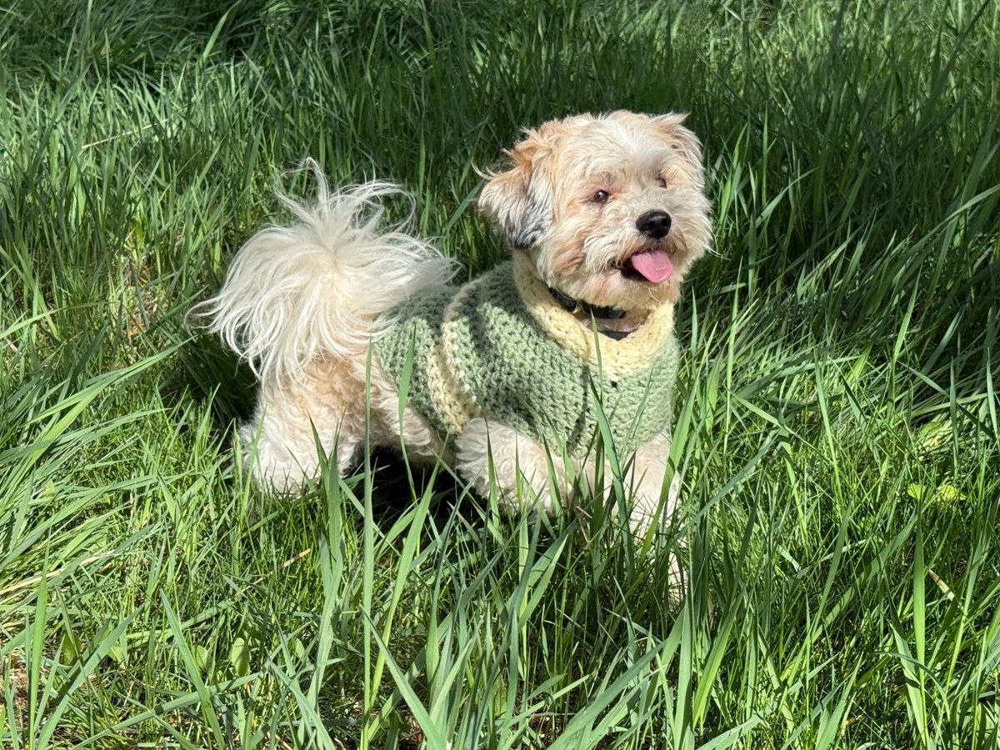

I’m a bioengineer excited about creating workflows and pipelines to solve hard problems in biology and the life sciences. I have a PhD from the University of Michigan. My research focused on how membrane-bending proteins support endocytosis, including during viral entry. I work at the intersection of wet-lab experiments and software development, building analysis pipelines for microscopy, bioprocessing, and computational biology.
I work in biopharmaceutical development at Zoetis, where I wear two hats. I lead upstream process development for monoclonal antibodies. I also co-lead the computational fluid dynamics (CFD) team, supporting work across pharmaceuticals, biopharmaceuticals, and diagnostics. I use agentic AI tools to accelerate workflow development and help scientists do better science.
I’m interested in workflows that improve as more data and compute become available, rather than depend on an expanding set of domain-specific heuristics. (Rich Sutton, 2019)
A collection of physical models for how cells generate and respond to forces. It connects membrane mechanics and Bayesian inference with models of tissue junctions, cortical tension, adhesion, and force-sensitive channels. The aim is to compare explanations against experiments while keeping assumptions, uncertainty, and sources attached to each result. I started it during Anthropic’s Built with Claude Science hackathon.
A literature review and mechanistic dataset comparing how 38 viruses enter cells. It asks which steps they share, with a focus on endosomal entry and acidification. The review separates experimental findings, inferred mechanisms, and predictions about how viruses might bypass entry blockers.
This is a repo I built to test how different agent pipelines perform on multicomponent, long-horizon scientific tasks.
The goal is to see how agents connect scientific tools, handle failures, resume interrupted work, and check whether their results are scientifically valid. Runs preserve inputs, actions, tool outputs, checkpoints, and verification evidence so the workflow can be inspected and compared.
Outside of work
I love spending time with my family in West Michigan. I also love tinkering and learning new things, whether that means figuring out where plants should go in my garden beds or working through plumbing and electrical code requirements during a home renovation.

Meet Baloo, the namesake of my GitHub account.
Contact
If you’d like to talk about the projects, science, or something you’re building, feel free to reach out.